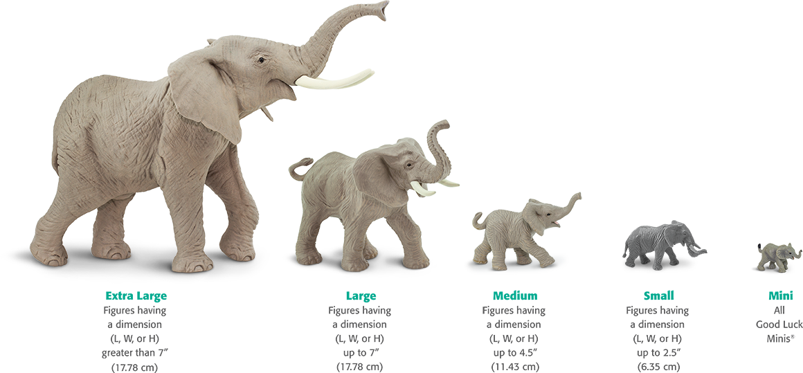
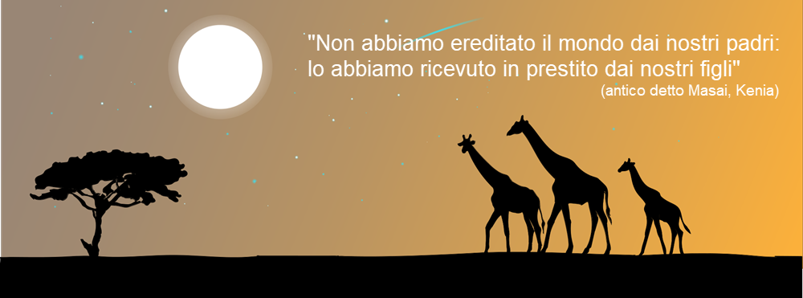

.jpg)
ABOUT THE AFRICAN ELEPHANT
African elephants are the largest land animals on Earth.They are slightly larger than their Asian cousins and can be identified by their larger ears that look somewhat like the continent of Africa.(Asian elephants have smaller, rounded ears)
Home for polar bears id on the sea ice,where they hunt seals at open leads.Polar bear are found in five nations across the Arctic: the U.S.,Canada,Russia,Greenland and Norway.Due to the absence of human development in its remote habitat, it retains more of its original range than any other extant carnivore. While they are rare north of 88°, there is evidence that they range all the way across the Arctic, and as far south as James Bay in Canada. Their southernmost range is near the boundary between the subarctic and humid continental climate zones.
Tigers have the ability to emit a wide variety of vocalizations to communicate over long distances in different contexts. Although roars are the best-known vocalizations, they make this sound infrequently. Typically, tigers roar when they want to attract attention (a mother calling her offspring, for example) and when their intent is to provide information about their presence and location. They can also roar during mating, in hostile situations and to communicate sexual receptivity.
Donec sed odio dui. Cras justo odio, dapibus ac facilisis in, egestas eget quam. Vestibulum id ligula porta felis euismod semper. Fusce dapibus, tellus ac cursus commodo, tortor mauris condimentum nibh, ut fermentum massa justo sit amet risus.